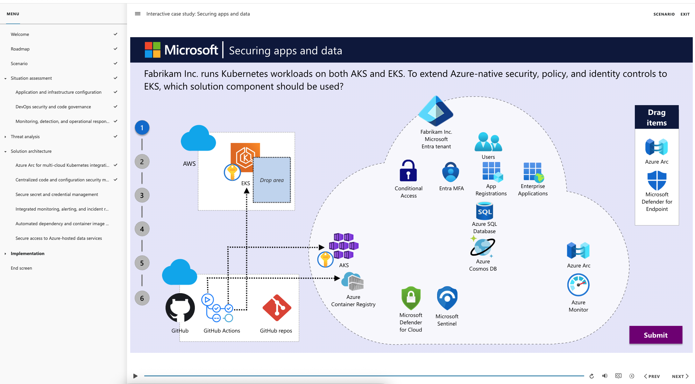
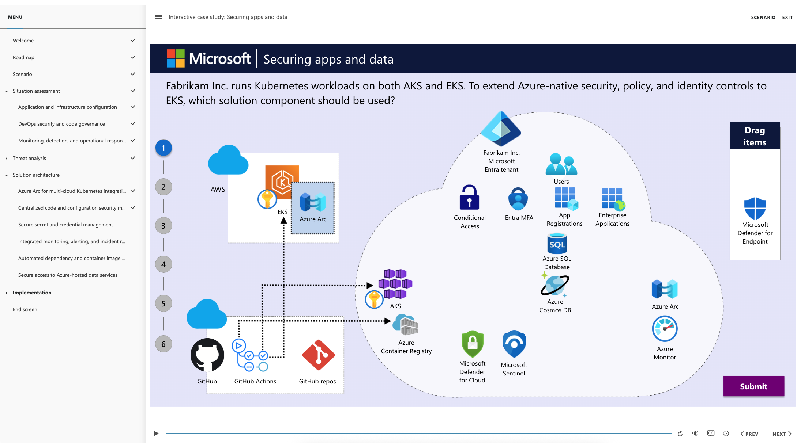
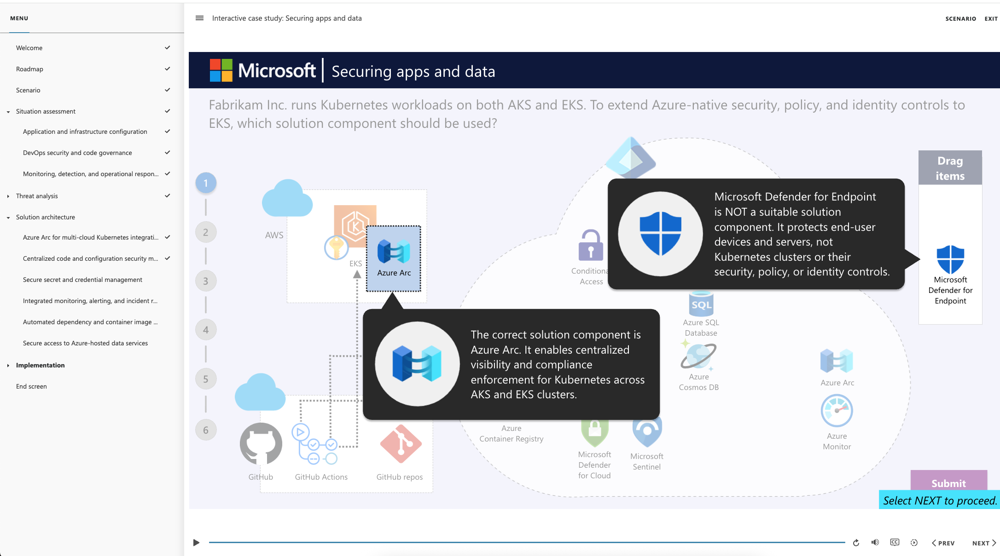
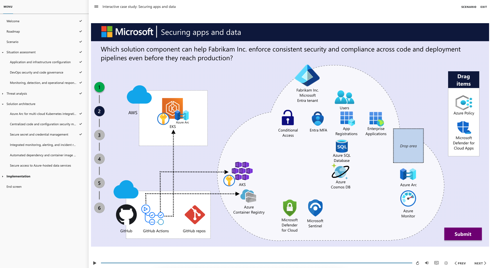
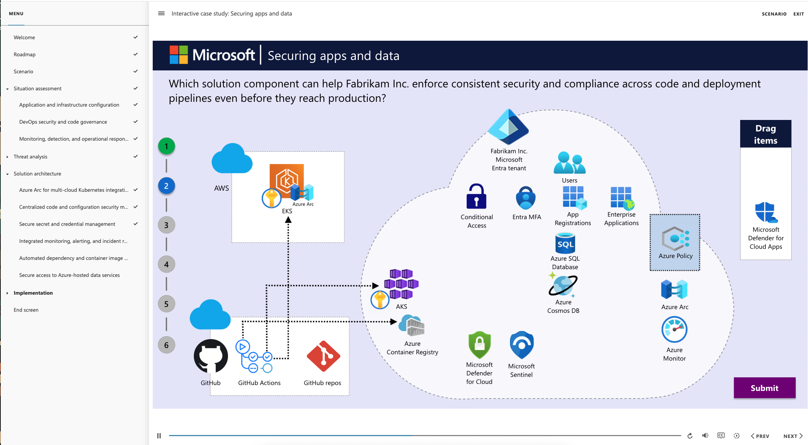
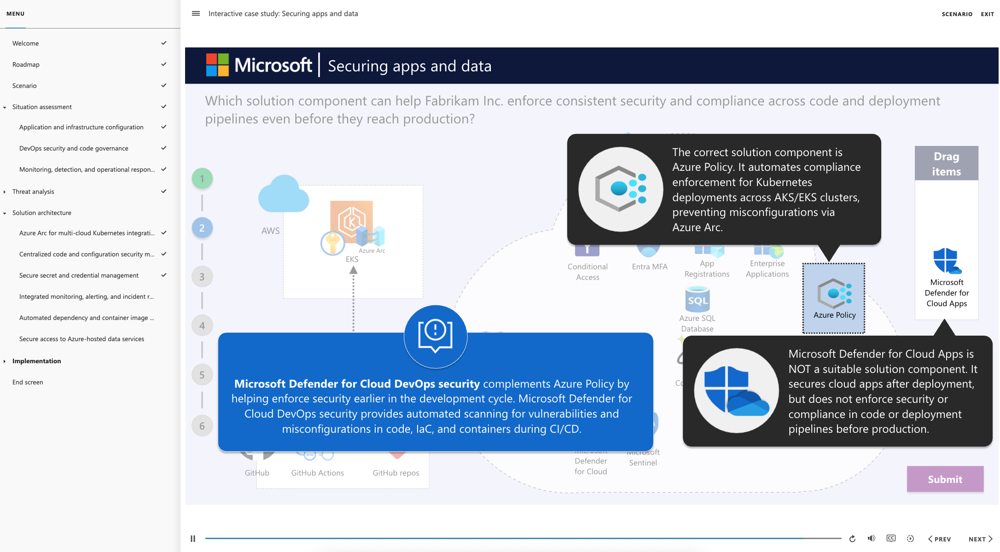
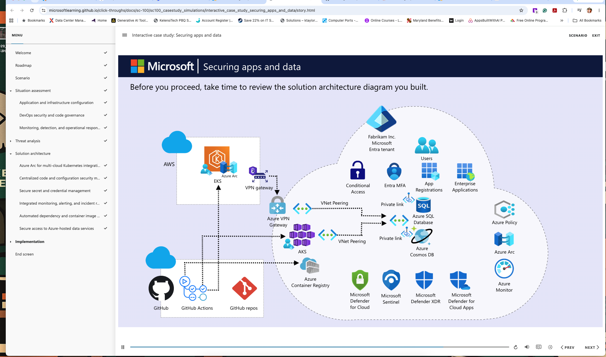

A Microsoft AI Skills Fest interactive lab building a core understanding of modern security concepts, threats, and protections across identities, data, devices, infrastructure, and AI systems. Completed two real-world security scenarios using drag-and-drop architecture design, hotspot threat analysis, multiple-choice assessments, and Zero Trust implementation planning — all within Microsoft's guided interactive learning environment.
Situation Assessment: Reviewed Fabrikam Inc.'s dual-cloud environment running microservices across Azure Kubernetes Service (AKS) and Amazon Elastic Kubernetes Service (EKS). Identified the following security gaps:
Translated the operational weaknesses into tangible threats and identified the following risks:
Designed a Zero Trust–aligned DevSecOps framework using integrated Microsoft tools to address Fabrikam's risks:
Situation Assessment: Reviewed the current architecture at Litware Inc. — a global manufacturer with more than 40 sites spanning IT and OT environments. Completed a hotspot activity identifying risks across the live architecture diagram including Litware plant, facility, edge computing nodes, SIEM tools, Azure subscriptions, and Entra tenant. Identified the following security gaps:
Identified the following threats resulting from Litware's operational weaknesses:
Designed a Zero Trust–aligned hybrid security framework and sequenced the implementation steps using the drag-and-drop activity and carousel-based deployment visualization:
Implementation was sequenced across five phases: establish endpoint security baseline → enhance threat detection and automated response → deploy centralized security monitoring → secure OT and IoT assets → modernize edge and hybrid infrastructure.
Screenshots taken during the interactive lab. Upload to
assets/images/
named lab003-01.png,
lab003-02.png etc.







// Upload additional screenshots to assets/images/ named lab003-07.png and above — add photo-item blocks following the same pattern